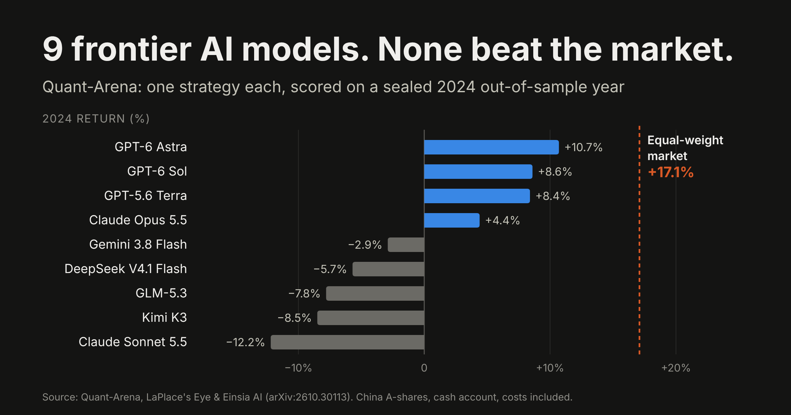

AI trading · Research
Nine Frontier LLMs Tried to Trade. None Beat the Market.
What a sealed out-of-sample experiment says about AI trading, and what it takes to build AI that actually holds up.

Can a frontier language model research a trading strategy, commit to it, and have it survive a year it has never seen? Quant-Arena, a new benchmark from LaPlace's Eye and Einsia AI (arXiv:2610.30113), put that question to nine frontier models: GPT-6 Astra, GPT-6 Sol, GPT-5.6 Terra, Claude Opus 5.5, Claude Sonnet 5.5, Gemini 3.8 Flash, GLM-5.3, Kimi K3 and DeepSeek V4.1 Flash.
The protocol was fair and strict. Each model acted as a quant researcher on real China A-share data, iterated on 2022–2023 with bounded feedback, and committed exactly one strategy. That strategy was then scored once on a sealed 2024 window, in a cash account, with trading costs and simulated market impact.
Seven of the nine had max drawdowns between −28% and −36%, and only four ended the year above starting capital. Not one frontier LLM beat a simple equal-weight index.
The paper deserves a close read, not because it proves "AI doesn't work", but because it turns "how do you prove a strategy is real" into a checkable experiment. Its three findings map almost exactly onto the design choices behind AlphaNet, the AI trading platform I work for.
Finding 1: The sealed window resets everything
Models could iterate with feedback inside 2022–2023, but scoring looked only at the frozen strategy on sealed 2024 data. That design turns overfitting from an abstract worry into a measurable gap. However good a strategy looks in-sample, the sealed window starts the count again.
Feedback helped, but it didn't close the gap. The best score on the iterative track (51.29) beat the best one-shot score (42.61), yet no iterated strategy reached the market's return.
This is why AlphaNet splits every strategy curve at its stated research and live boundaries and reports each period separately. Nothing is bundled or smoothed. The live period is the only one that reflects real trading conditions, so it is the one AlphaNet leads with.
Finding 2: Good rankings, no returns
The most useful result isn't that the models lost money. It's why. Seven of nine models had a positive RankIC: they ranked stocks better than chance. But for most of them, returns peaked in the second or third decile and fell toward the top decile, the exact names the portfolio bought. The models promoted their second-best ideas to first place.
GPT-6 Astra had the highest RankIC in the field (0.101) and still finished 6.3 points behind the market. As the paper puts it:
"Average rank correlation says little about whether a strategy makes money."
Between signal quality and account returns sits a whole conversion layer the LLMs never built: decile monotonicity checks, portfolio construction, sizing, exposure management and exit discipline. That layer is what AlphaNet's Archimedes series is built around. Put Quant-Arena's failure list next to Archimedes' build list and the match is close to one-to-one:
| What broke in Quant-Arena | How Archimedes is built |
|---|---|
| Top-ranked names underperformed; no portfolio construction | 2,000+ engineered features, long/short sub-strategy books, dynamic sizing, market-neutral exposure |
| Strategies held positions with no exit logic | Adaptive exit engine: 72–83% of closes are model decisions, not stop-loss triggers |
| Only 1 of 9 learned to read market state | Regime-Aware Transformer classifies trend, chop and volatility first, then decides entry, size, hold and exit |
| Signals only looked fine inside a combined portfolio | Every sub-strategy must clear a standalone Sharpe above 1.0 before it enters the book |
This matters well beyond equities. Plenty of crypto products advertise signal win rates and prediction accuracy. Quant-Arena just showed those numbers can coexist with a losing portfolio.
Finding 3: The first thing AI learned was when not to trade
The one bright spot proves the point. After feedback showed losses, GPT-6 Astra wrote a simple timing rule: hold cash when the market trends down. It held its drawdown to −1.7% in the February 2024 crash, against −29.6% for the market. It also missed much of the rebound and still finished the year behind.
The lesson isn't "timing is everything". It's that in an automated system, the first risk layer that earns its keep is knowing what regime the market is in. That is where professional quant systems spend most of their engineering effort, and it's the backbone shared by AlphaNet's Hackworth profiles and Archimedes family:
- Regime classification: markets are sorted into high-volatility trend, low-volatility grind, chop and liquidation-cascade states before any trade decision.
- Exit ownership: the adaptive exit engine decides closes; its value is tested against 1,065–2,870 matched "what if we had held" controls per strategy.
- A gate that says no: a particle-filter gate declines to trade when signal quality is low.
Should an LLM be the trading engine at all?
Behind the three findings sits a bigger question. Quant-Arena gives the empirical answer, and the engineering reasons are clear. An LLM is a next-token predictor: its training loss isn't aligned with Sharpe or PnL. Its inference is slow for fast markets. Its outputs are probabilistic, so the same input doesn't guarantee the same decision.
AlphaNet's answer is a deliberate division of labor:
- No LLM in the core trading loop. Predictions come from deep-learning models (TFT, LSTM, GRU, Transformer, TCN) trained directly on Sharpe- and PnL-based losses, with millisecond inference and deterministic outputs.
- LLMs do what they're good at: reading news and sentiment, assisting research, and translating factor ideas into code.
- Five adversarial gates before launch:
- a parameter-sensitivity surface (±5% around the optimum, 500+ backtests; sharp minima are rejected)
- input-noise perturbation, with signal correlation required above 0.95
- combinatorial purged cross-validation across thousands of synthetic paths, with PSR left-tail checks
- cross-era consistency audits within each regime
- volatility-decile stress tests
- Validation keeps running after launch. A 14-day moving RankIC tracks alpha decay; KL divergence and PSI flag feature drift; residual autocorrelation checks the model still fits the market.
Quant-Arena runs "prove it" as a one-time sealed experiment. AlphaNet runs it as a continuous process. LLMs understand the world; a validated, purpose-built engine places the trades.
AlphaNet's published track record
Quant-Arena asks its question with a sealed window. AlphaNet answers with a tracked record, published strategy by strategy. One caveat first: Quant-Arena studies China A-shares and AlphaNet trades crypto perpetuals on Hyperliquid, so raw returns don't transfer. What transfers is the method, and the risk-adjusted metrics.
AlphaNet's Strategy performance update 1 reports, from each strategy's tracked start date through October 20, 2026:
| Metric | AlphaNet strategy basket | Corresponding asset benchmark |
|---|---|---|
| Since tracked start (equal-weight) | ≈ +39% | −0.8% |
| Latest three weeks, through the pullback | +3.5% | −9.9% |
AlphaNet publishes 51 AI strategies for crypto perpetuals, led by the Hackworth family: three approaches (Prime, Trend and Optima Short) across 15 assets. Each is measured from its own tracked start, excluding earlier backtests, and reported returns exclude trading fees.
The pullback is where regime awareness shows up. Over the latest 30 days HYPE fell 15.3%, while its three strategies ranged from −2.5% to +1.0%. In the same window, XMR's Optima Short returned +21%. ZEC, the biggest contributor (about +409% for Trend and +407% for Prime since January), gave back some performance in the pullback. Not every window is a win, and the update shows those windows too.
On the only metrics that travel across markets, here is how Quant-Arena's LLMs compare with Archimedes:
| Strategy | Sharpe | Max drawdown |
|---|---|---|
| Best LLM by Sharpe (GPT-6 Sol, sealed 2024) | 1.89 | −2.8% |
| Median of 9 LLMs (sealed 2024) | 0.06 | −30.3% |
| Archimedes · ZEC (live) | 4.18 | −17.3% |
| Archimedes · XMR (frozen backtest) | 3.87 | −21.8% |
| Archimedes · ETH (frozen backtest) | 3.54 | −16.3% |
| Archimedes · SOL (frozen backtest) | 3.31 | −15.4% |
| Archimedes · BNB (frozen backtest) | 2.89 | −21.8% |
The Archimedes backtests are frozen preview portfolios (January 2024 to September 2026, 300% target gross exposure) with no mid-window re-optimization, the same discipline Quant-Arena imposes. Every sub-strategy also passes standalone Sharpe, parameter perturbation, trade bootstrap and year-by-year stability checks.
Quant-Arena's leaderboard makes the same point from the other side. Einsia AI's own reference system, Kepler-1, returned +94.0% in the sealed year with a Sharpe of 2.98. Its construction isn't disclosed, so I won't grade it. But when AI is built as a system rather than prompted as an oracle, the results look nothing alike.
A ruler for judging any AI strategy
Quant-Arena's protocol (sealed out-of-sample window, frozen strategy, cash account, real costs) deserves to become an industry standard. Until it is, here is the ruler I use for any AI trading product, AlphaNet included:
- Ask how the answer was validated, not what the AI said. A pretty backtest curve proves nothing. Sealed windows, costs and standalone signal checks prove a lot.
- Don't confuse good rankings with good returns. Quant-Arena just showed the two can point in opposite directions.
- Judge risk-adjusted numbers, not raw returns. Sharpe and max drawdown are the only fair language across strategies and markets.
- Ask to see the losers. A platform that publishes only its winners is showing you marketing, not a track record.
There is a whole engineering discipline between AI that writes strategies and AI that makes money. That discipline is the product. AlphaNet will keep updating its live record monthly and hold itself to the same out-of-sample standard.
Sources and disclosures
- Quant-Arena: Benchmarking LLM Agents for Quantitative Trading Research, LaPlace's Eye and Einsia AI, 2026 (paper). Quant-Arena has no affiliation with AlphaNet; where this summary differs, the original prevails.
- AlphaNet track-record figures: Strategy performance update 1, published October 21, 2026, data through October 20, 2026.
- Archimedes figures: Archimedes Series engine documentation and strategy pages (app.alphanet.global).
AlphaNet figures are published model strategy results, not customer account returns, exclude trading fees, and have not been audited by a third party. Quant-Arena covers China A-shares, a different asset class from crypto perpetuals, so returns are not directly comparable. Perpetual futures carry funding costs, slippage and liquidation risk. Past performance does not guarantee future results. This is not investment advice.
Author disclosure: I work in business development at AlphaNet, so I have a direct interest in how its strategies are perceived. This post reflects my personal views, not an official AlphaNet statement.